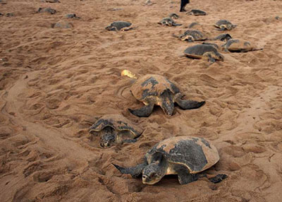
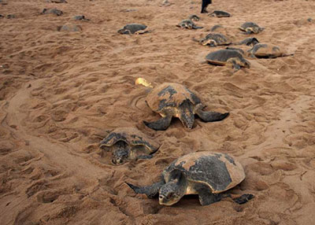
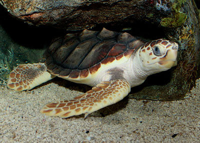
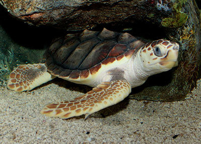

Sri Lanka is home to five different species of turtles. These species includes,


The Sri Lankan Green Turtle is the most commonly found turtle in Sri Lanka and one of the largest known sea turtles. It can be recognized from its flattened body covered by a tear shaped shell that is blackish grey in colour, a smaller head than the loggerhead turtle and a pair of large paddle like flippers. The adult turtle is relatively large weighing between 68 and 190 kg with exceptional species weighing as much as 315 kg. It gets its name from the green colour fat found in the layers under its shell. They are found mainly thriving in the tropical waters of the ocean, feeding only on marine vegetation such as algae and sea grass, returning to the shore to lay eggs.
Green turtles nest all year round in Sri Lanka, with the highest abundance reported in Kosgoda (north of Galle) and Rekawa (near Tangalle). The best time to see them nest is between January and March.
 


The Sri Lankan Olive Ridley Sea turtle (Lepidochelys olivacea) is found existing in the warm waters of the Indian Ocean. It is relatively small in size with a black heart shaped upper exoskeleton that turns olive green in adulthood. It averages 60-70 centimeters in length, with a weight not exceeding 50kg. The Olive Ridley, known to be the sea turtle found most abundantly comes ashore in a unique phenomenon known as “arribada” where large groups of females come all at once to nest. The Olive Ridley feeds mainly on jellyfish, shrimp, mollusks and fish and has an average lifespan of 50 years.
The Olive Ridley Turtles can mostly be seen in the Trincomalee beach - located to the east coast of Sri Lanka, Trincomalee Beach is a beautiful stretch of golden sand where visitors can spot Olive Ridley turtles nesting during the arribadas.

The Sri Lankan Hawksbill turtle (Eretmochelys imbricata) is a marine turtle that is listed as critically endangered by the World Conservation Union as a result of poachers seeking its beautiful 'tortoise-shell', which is commercially valuable, human consumption of tortoise flesh & eggs in addition to the reptile getting wedged in fishing gear. In appearance it is dark golden brown in colour with reddish orange streaks, its most distinctive feature being the thick scutes that make up its hard upper shell. The Hawksbill turtle is relatively small to medium in size with an elongated head that tapers into a pointed hawk-like beak. Its habitat is mainly coral reefs and shallow lagoons where it feeds on sponges, fish, sea anemones and jellyfish amongst others.
Nesting sites of Sri Lanka includes Kataduwa, Bentota, Udappuwa, Kosgoda, Karaduwa, Talaimannar, Jaffna, Galkissa, Talawila, Palatupana, Amadhauwa. These turtles are found mainly in the tropical regions of the Atlantic, Pacific, Indian Oceans & Mediterranean Sea.
 


The Sri Lankan Loggerhead Sea turtle (Caretta caretta) is reddish brown in colour with a slightly heart shaped top shell and relatively large head. The adult length is approximately three feet with an adult weighing around 250 pounds (113 kg). These marine reptiles are found mostly in salt water sometimes hundreds of miles out in the ocean and also in estuarine habitats such as bays, lagoons and salt marshes with females coming ashore momentarily for nesting. Being carnivores it feeds mainly on marine invertebrates, especially hard shelled crustaceans, which it devours with its powerful jaws. It is believed that the Loggerhead Sea turtle's lifespan is approximately 50 years.

The Leatherback Sea turtle (Dermochelys coriacea) is known as the largest of all living turtles and the fourth heaviest modern day reptile. It can be recognized by its large grayish-black teardrop shaped body covered by skin and oily flesh and the seven prominent ridges that run from the front to the back of its body. The Leatherback sea turtle grows up to seven feet (two meters) and is known to weigh over 2000 pounds (900 kg). Its hydrodynamic body shape along with a large pair of front flippers helps it to move strongly through the water, where it feeds mainly on jellyfish and other small sea animals.
| Name of the Turtle | Scientific Name | Where are they found? | Life Span | Features |
|---|---|---|---|---|
| The Green Turtle | Chelonia mydas | Kosgoda and Rekawa | 80+ Years | Greenish fatty skin on upper shell |
| Olive Ridley Turtle | Lepidochelys olivacea | Trincomalee beach | 50 Years | Olive coloured shell |
| Hawksbill Turtle | Eretmochelys imbricata | Bentota, Kosgoda, Udappuwa | 30-50 Years | Tapered heads with a bird-like beak and a pair of claws on each flipper |
| Loggerhead Turtle | Caretta caretta | In the southern beaches | 50+ Years | Massive heads and strong jaws with Reddish-brown shell |
| Leatherback Turtle | Dermochelys coriacea | In the Southern beaches | 30 Years | Long front flippers |